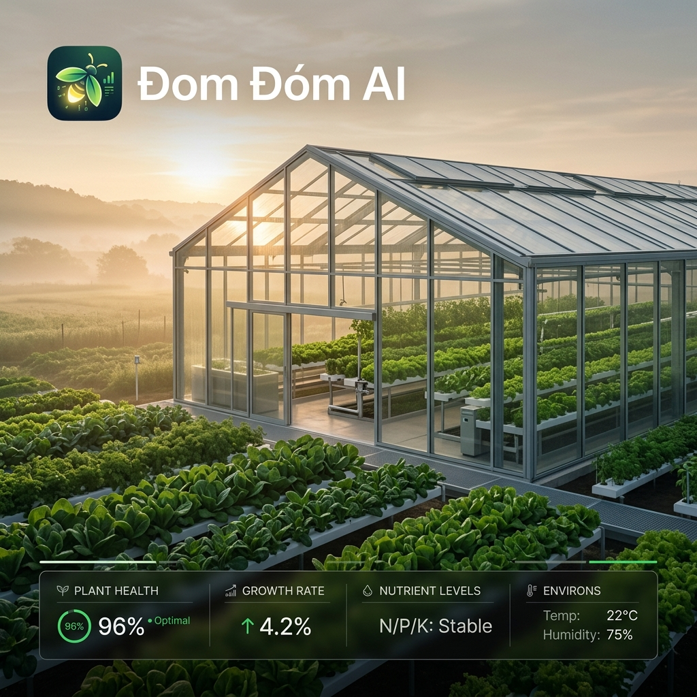

Đom Đóm AI:
Trợ lý Nông nghiệp Thông minh

Tổng quan dự án
Một giải pháp ứng dụng trí tuệ nhân tạo nhằm tối ưu hóa năng suất cây trồng cho nông dân Việt Nam trong bối cảnh biến đổi khí hậu phức tạp.
Vai trò
Lead UI/UX Designer
Thời gian
3 tháng (2023)
Vấn đề
Nông nghiệp truyền thống đang đối mặt với những thách thức chưa từng có do sự bất ổn của môi trường và thiếu hụt dữ liệu chính xác.
Thời tiết khó lường
Các đợt thiên tai đột ngột và chu kỳ mùa vụ bị thay đổi khiến nông dân không kịp trở tay, dẫn đến mất trắng mùa màng.
Thiếu dữ liệu thực tế
Quyết định canh tác dựa trên kinh nghiệm truyền miệng thay vì số liệu đo đạc thực tế tại vườn, làm giảm hiệu quả canh tác.
Dịch bệnh bùng phát
Sâu bệnh không được phát hiện sớm và xử lý đúng cách, dẫn đến việc lạm dụng thuốc bảo vệ thực vật không cần thiết.
Giải pháp
Giải pháp AI cho nông nghiệp
Dự báo thời tiết AI
Sử dụng mô hình Deep Learning để dự báo chính xác điều kiện khí hậu vi mô ngay tại tọa độ trang trại.
Phân tích sức khỏe
Nhận diện sớm dấu hiệu sâu bệnh thông qua hình ảnh camera smartphone với độ chính xác lên đến 98%.
Đề xuất mùa vụ
Thuật toán tối ưu hóa lựa chọn giống cây trồng dựa trên nhu cầu thị trường và thổ nhưỡng địa phương.
Giao diện ứng dụng

Bảng điều khiển
Quản lý tổng thể

Camera AI
Phân tích bệnh cây

Dự báo
Dự báo khí hậu

Cá nhân
Thiết lập cá nhân
Dự án tiếp theo
Vua Thợ
Nền tảng kết nối thợ chuyên nghiệp.